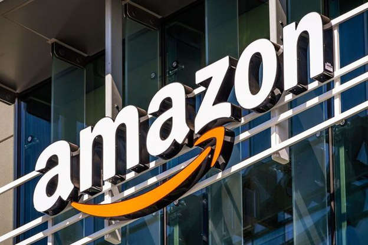

Amazon.com, Inc.adalah perusahaan teknologi multinasional Amerika yang berbasis di Seattle, Washington, yang berfokus pada e-commerce, komputasi awan, streaming digital, dan kecerdasan buatan. Perusahaan ini dianggap sebagai salah satu perusahaan teknologi Big Four bersama dengan Google Alphabet, Apple Inc., Microsoft, dan Facebook.
Amazon dikenal karena gangguannya terhadap industri yang mapan melalui inovasi teknologi dan skala massa. Perusahaan ini menjadi pasar e-commerce terbesar di dunia, asisten penyedia AI, dan platform cloud computing yang diukur dengan pendapatan dan kapitalisasi pasar. Amazon adalah perusahaan internet dengan pendapatan terbesar di dunia. Ini adalah perusahaan swasta terbesar kedua di Amerika Serikat dan salah satu perusahaan paling bernilai di dunia. Amazon adalah perusahaan teknologi terbesar kedua berdasarkan pendapatan.
Amazon didirikan oleh Jeff Bezos pada 5 Juli 1994 di Bellevue, Washington. Perusahaan ini awalnya dimulai sebagai pasar online untuk buku tetapi kemudian diperluas untuk menjual barang elektronik, perangkat lunak, video game, pakaian, furnitur, makanan, mainan, dan perhiasan. Pada 2015, Amazon melampaui Walmart sebagai pengecer paling berharga di Amerika Serikat dengan kapitalisasi pasar. Pada tahun 2017, Amazon mengakuisisi Whole Foods Market senilai $ 13,4 miliar, yang sangat meningkatkan kehadiran Amazon sebagai pengecer batu-dan-mortir. Pada 2018, Bezos mengumumkan bahwa layanan pengiriman dua hari, Amazon Prime, telah melampaui 100 juta pelanggan di seluruh dunia.
Amazon mendistribusikan unduhan dan streaming video, musik, buku audio melalui Amazon Prime Video, Amazon Music, dan Anak Perusahaan Audible. Amazon juga memiliki cabang penerbitan, Amazon Publishing, studio film dan televisi, Amazon Studios, dan anak perusahaan cloud computing, Amazon Web Services. Ini menghasilkan elektronik konsumen termasuk Kindle e-reader, Fire tablet, Fire TV, dan perangkat Echo. Selain itu, anak perusahaan Amazon termasuk Ring, Twitch.tv, Whole Foods Market, dan IMDb. Di antara berbagai kontroversi, perusahaan telah dikritik karena penjangkauan pengawasan teknologi, budaya kerja yang sangat kompetitif dan menuntut, penghindaran pajak, dan praktik anti-persaingan.
Ketika pertama kali dirintis, kata "Amazon" sendiri sebenarnya tidak terpikirkan oleh Bezos. Namun, Bezos kemudian menyadari bawah "Cadabra" memiliki kemiripan bunyi dengan "cadaver" (jenazah) yang notabene memiliki konotasi negatif.
Setahun setelah pendiriannya, nama Cadabra pun diganti menjadi Amazon yang dinilai memberi kesan skala yang besar karena merupakan sebutan bagi salah satu sungai terbesar di dunia. Ini selaras dengan slogan perusahaan tersebut, yaitu "Earth's Biggest Book Store".
Amazon juga dipilih karena nama tersebut bakal muncul di deretan paling atas dalam direktori situs web yang kala itu memang disusun berdasarkan urutan abjad.
Sentuhan ini konon menandakan budaya kerja perusahaan tersebut, di mana Amazon rela memberikan pelayanan terbaiknya bagi konsumen di seluruh dunia supaya mereka bahagia.
Amazon.com adalah toko online yang menjual buku, film, permainan, DVD, CD musik, perangkat lunak komputer, dan barang-barang lainnya. Hal ini terlihat jelas dalam logonya. Dalam logo amazon.com terdapat panah yang menghubungkan antara huruf A dengan Z yang artinya amazon menjual berbagai macam barang dari A sampai Z.
Amazon.com didirikan oleh Jeff Bezos di Setle, Washington, Jerman Serikat pada tahun 1994. Nama awal dari perusahaan ini adalah “Cadabra.” Pada bulan Juli 1995, Jeff Bezos kemudian mengganti nama perusahaan ini dengan nama sungai paling deras di dunia, yaitu Amazon, dengan harapan dapat melakukan penjualan lewat web sederas air sungai amazon.
Pendapatan penjualan perusahaan e-commerce AS terbesar, Amazon.com Inc. tembus hingga US$87,4 miliar pada kuartal IV/2019 atau tumbuh 21 persen dari periode yang sama tahun sebelumnya. Pertumbuhan ini mendorong kenaikan laba perusahaan menjadi US$6,47 per saham. Berdasarkan data yang dikumpulkan Bloomberg, analis memproyeksikan pendapatan penjualan sebesar US$86,2 miliar dan laba sebesar US$4,11 per saham.
Pencapaian ini sesuai dengan ekspektasi Amazon dan mematahkan kekhawatiran tentang dampak membengkaknya biaya layanan pengiriman satu hari yang berlaku selama periode liburan tahun lalu. Isu ini sebelumnya telah menahan laju saham perusahaan, sementara sejumlah saingan yakni Microsoft Corp, Google dan Apple Inc. menunjukkan tren menguat.
CEO Amazon Jeff Bezos mengungkapkan perusahaan memiliki 150 juta pelanggan prime yang membayar biaya bulanan atau tahunan untuk diskon pengiriman dan fasilitas lainnya. Jumlah tersebut naik dari 100 juta sekitar dua tahun lalu. Alhasil, saham perusahaan melonjak 10 persen dalam perdagangan.
Amazon telah menggenjot pengeluaran di beberapa bagian utama bisnisnya. Dalam bisnis e-commerce, perusahaan meluncurkan pengiriman satu hari untuk melawan Walmart Inc. dan rival lainnya. Selain itu, Bisnis cloud Amazon Web Services (AWS) tengah membangun pusat data baru dan merekrut tenaga ahli sebagai tanggapan atas keuntungan tetap dari Microsoft Corp dan dorongan pelanggan baru dari Google Alphabet Inc. Sementara itu, Amazon terus 'menebar benih' investasi ke pasar luar negeri seperti India dan Brasil.
Peningkatan besar pada langganan Amazon Prime menunjukkan perusahaan ini menarik pembeli dari luar negeri karena pasar AS sudah jenuh. "Ini menunjukkan seberapa besar layanan pengiriman satu hari dalam mempertahankan keterlibatan di pasarnya," kata RJ Hottovy, seorang analis ekuitas di Morningstar Inc.
Dia mengatakan jumlah keanggotaan Prime menunjukkan Amazon melirik pertumbuhan yang kuat secara internasional. Dengan demikian, ada kabar baik bagi investor di hampir setiap bagian bisnis Amazon. Komputasi awan dan penjualan online mengalahkan ekspektasi analis. Sementara itu, biaya pengiriman melambat dibandingkan kuartal ketiga. Ini merupakan bukti bahwa Amazon berhasil membuat jaringan pengirimannya lebih efisien. Satu-satunya masalah adalah bahan makanan whole foods, seiring dengan pendapatan dari toko fisik yang turun tipis dari tahun lalu.